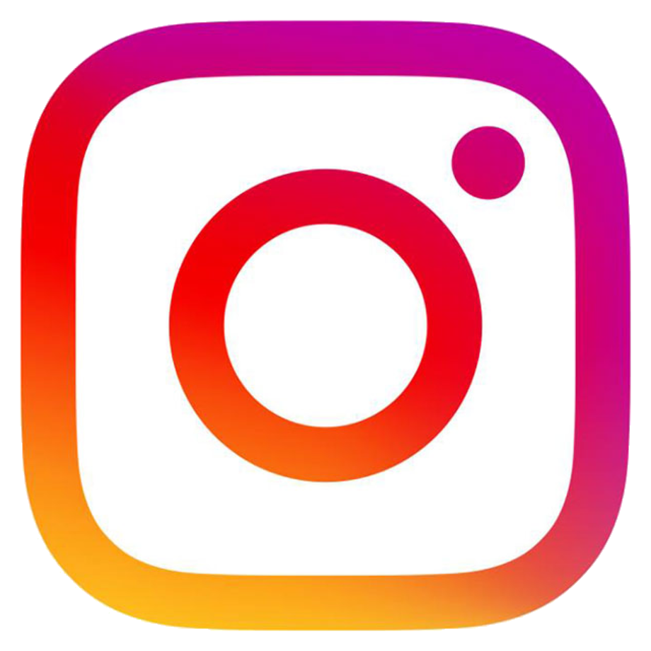

FACEBOOK FACEBOOK |
The reason I chose Facebook is that I spend most of my time here. this is where I post my artwork. This is the place where I can showcase my comics. A place where people can see, enjoy and laugh at my comics. A special place that allows me to be brave and show my art. |
 YOUTUBE YOUTUBE |
The reason I chose Youtube is that Youtube allows me as a user to enjoy and learn at the same time. I laugh a lot because of youtube. I learn a lot because of youtube. With youtube, I can learn whatever want, even if it's crochet, drawing, or digital art. I'm very thankful to Youtube for allowing me to access this information for free. |
| INSTAGRAM |
The reason I chose Instagram is that this is where I follow my idols. With Insta I can see part of the daily life of my idols. Instagram keeps us updated on the people we follow. With Insta I can also post and showcase my art freely. Instagram is a great place to show your pictures, art, or anything you want to show to the world. |
| WEBTOON |
The reason I chose Webtoon is that I like comics and I like art. Webtoon allows you to read comics for free. It even allows aspiring artists or writers to create their comics. Webtoon is a great place to read, you read comics of different genres. The reason I really like Webtoon is that it gives me the motivation to create my own comics. |
| PINTEREST |
The reason i chose pinterest is because this is where i get my ideas. this website help me to ge out of my art block. everytime I feel stuck in my arts, I always visit this wesite. If ever i need a reference for my drawing pinterest is always there. most important part is from pinterest i can download picture in high definitions. |